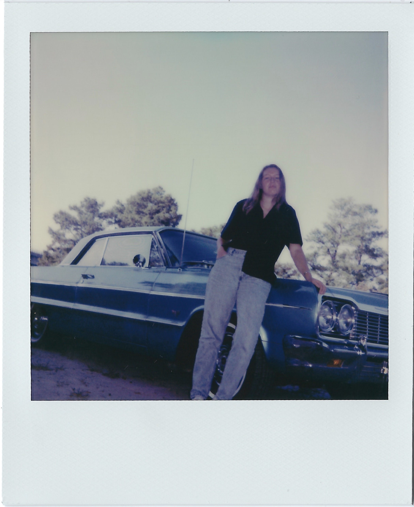

Catherine Page  is a graphic designer and photographer born and raised in Virginia. She is currently completing her BFA at Virginia Commonwealth University School of the Arts while simultaneously interning for Virginia Commonwealth University’s College of Humanities and Sciences. Her interest lies in print based media with an emphasis on photography. Her practice explores the idea of storytelling through publications usually produced with analog methods of making such as 35mm film photography and found ephemera.